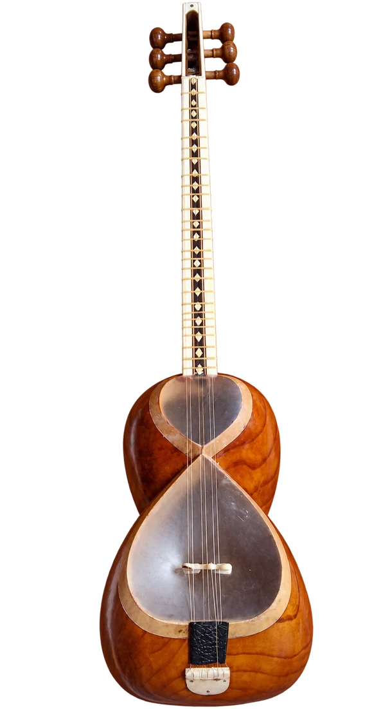

جایی برای تمرین
رطوبت و شرایط محیطی بر پوست و کوک اثر میگذارند. ساز را در شرایط مناسب نگهدار و تنظیم تخصصی را به فرد آگاه بسپار.
طنین روشنِ ریشهها
تار ایرانی سازی زهی با کاسه دو بخشی و صفحه پوستی است که با مضراب نواخته میشود. در شکل رایج امروزی شش سیم دارد. جای پردهها و ظرافت مضراب در اجرای جملههای موسیقی ایرانی اهمیت دارند.

حمله روشن مضراب و تشدید کاسه، صدای تار را شکل میدهند. تغییر مضراب و انگشتگذاری امکان بیانهای متنوعی ایجاد میکند.
انتخاب ساز از علاقه و تجربه آغاز میشود. برای تصمیم نهایی، ساز را از نزدیک امتحان کن و با مدرس دربارهٔ شرایط تمرینت حرف بزن.
ترتیب و سرعت آموزش با تجربه، تمرین و برنامهٔ استاد تنظیم میشود.
رطوبت و شرایط محیطی بر پوست و کوک اثر میگذارند. ساز را در شرایط مناسب نگهدار و تنظیم تخصصی را به فرد آگاه بسپار.
سلامت پوست و خرک، دسته و پردهها، راحتی انگشتگذاری و یکنواختی صدا را بررسی کن. ساز را صرفاً بر اساس تزئینات انتخاب نکن.
پیش از خرید ساز، نظر استاد را بپرس.نه؛ ساختمان، تعداد و آرایش سیمها، روش زخمه و رنگ صدا تفاوت دارند.
خیر؛ مبانی و رپرتوار مناسب سطح شروع در کلاس آموزش داده میشود.
با هزارآوا علاقههایت را مرور کن و تجربهٔ ریتم و شنوایی را امتحان کن.
آشنایی با هزارآوا ✦عکس: Sandika7 · تصویر اصلی · CC BY-SA 4.0 · نسخهٔ بهینهشده و بدون پسزمینه.